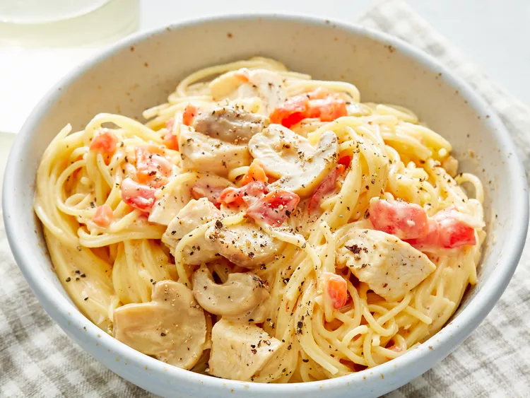

Quick and Easy Chicken Spaghetti

Description
This chicken spaghetti recipe is quick and easy to make, yet is hearty and delicious. It's a great way to use leftover chicken!
Chicken Spaghetti Ingredients
These are the ingredients you’ll need to make this easy chicken spaghetti recipe at home:
- Pasta:This quick recipe starts with a package of angel hair pasta. You can use regular spaghetti noodles if you prefer.
- Chicken:Use two cups of cooked chicken breasts. If you’re really in a rush, use leftovers or rotisserie chicken.
- Canned soup:You’ll need a can of diced tomatoes with green chile peppers for the flavorful spaghetti sauce.
- Canned tomatoes:You’ll need a can of diced tomatoes with green chile peppers for the flavorful spaghetti sauce.
- Cheese:Chopped jarred mushrooms lend flavor and texture. If you like, you can also add other veggies (like onions or bell peppers)
- Mushrooms:Chopped jarred mushrooms lend flavor and texture. If you like, you can also add other veggies (like onions or bell peppers)
- Seasonings:Season the chicken spaghetti with salt and pepper to taste. If you prefer a spicy spaghetti, add some crushed red pepper.
Back To Main page